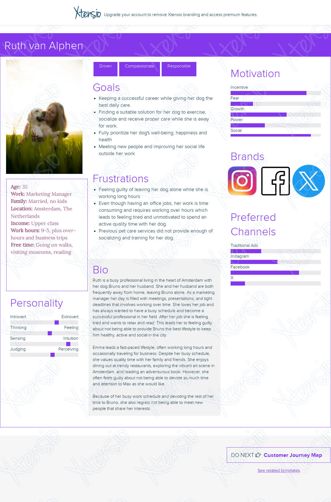
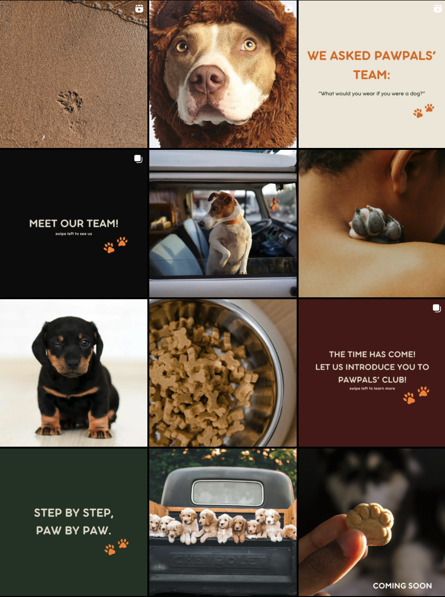
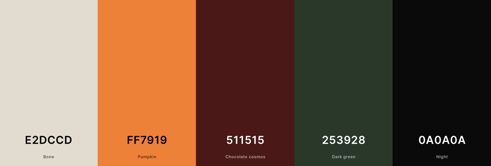
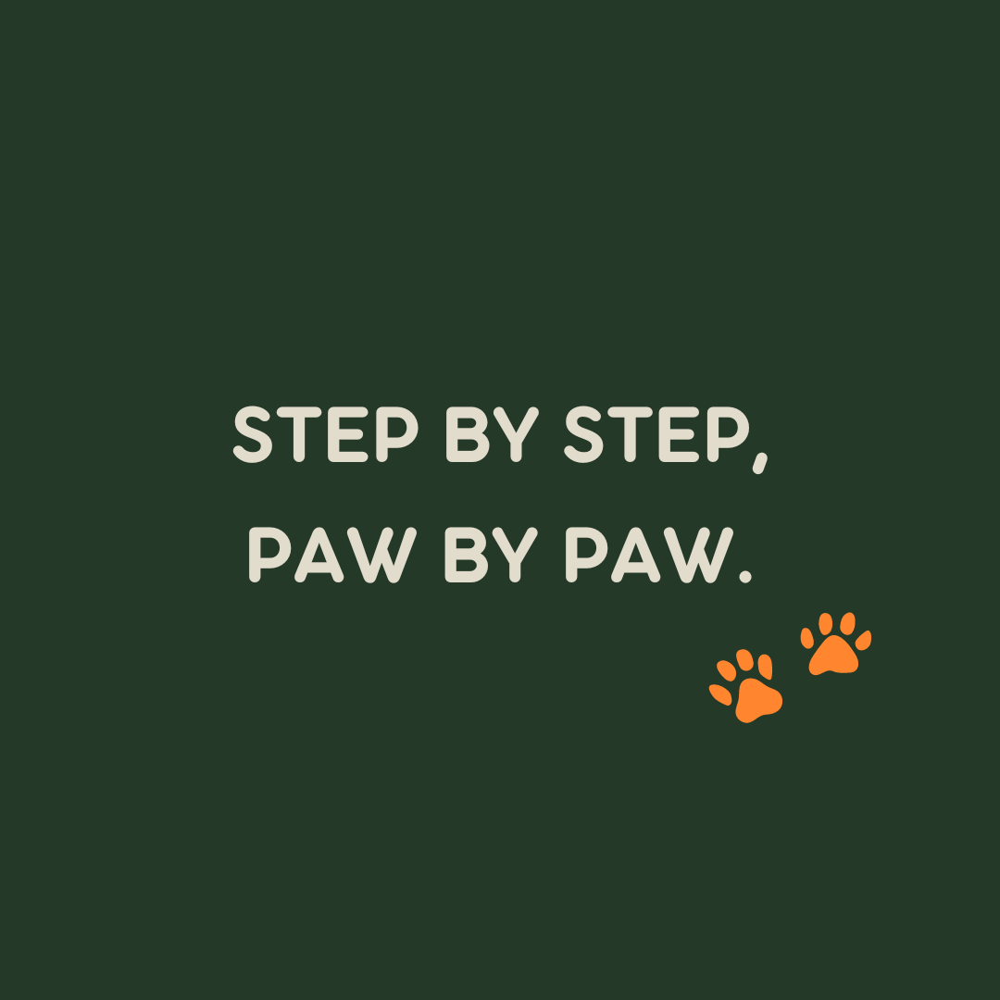
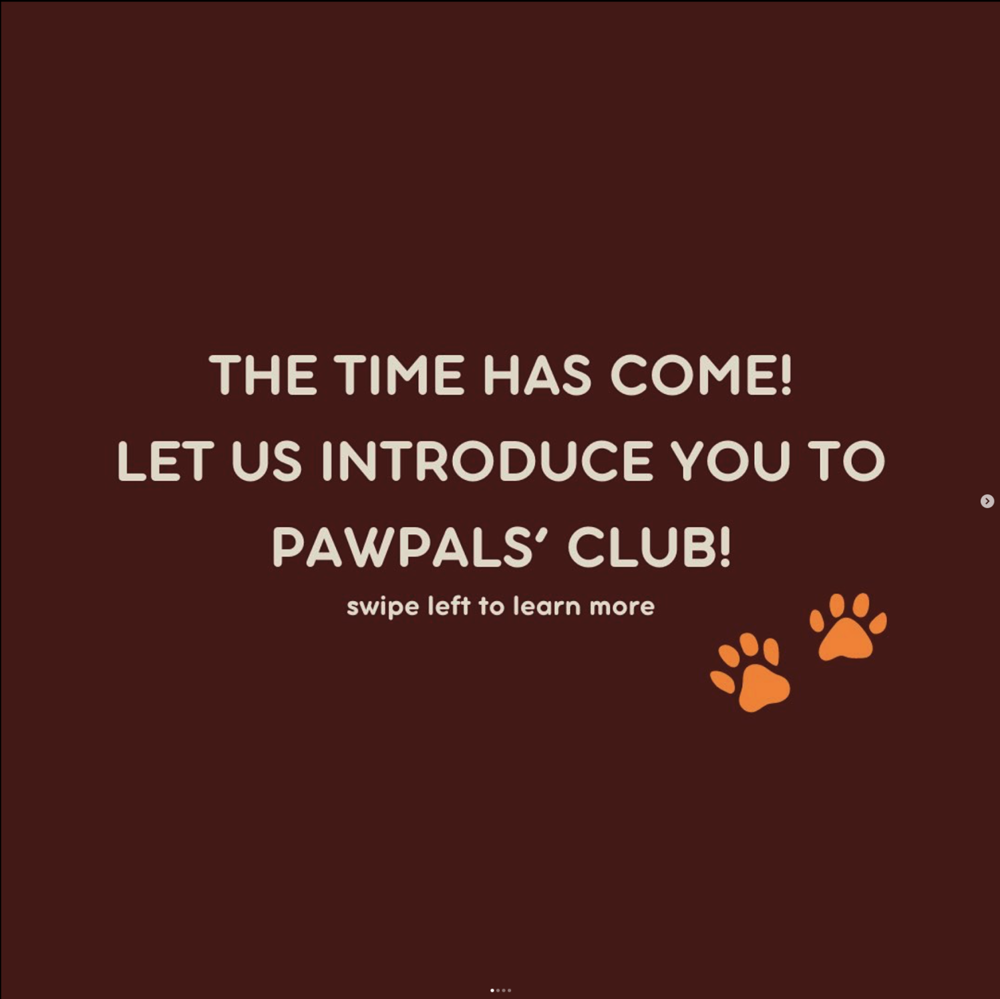
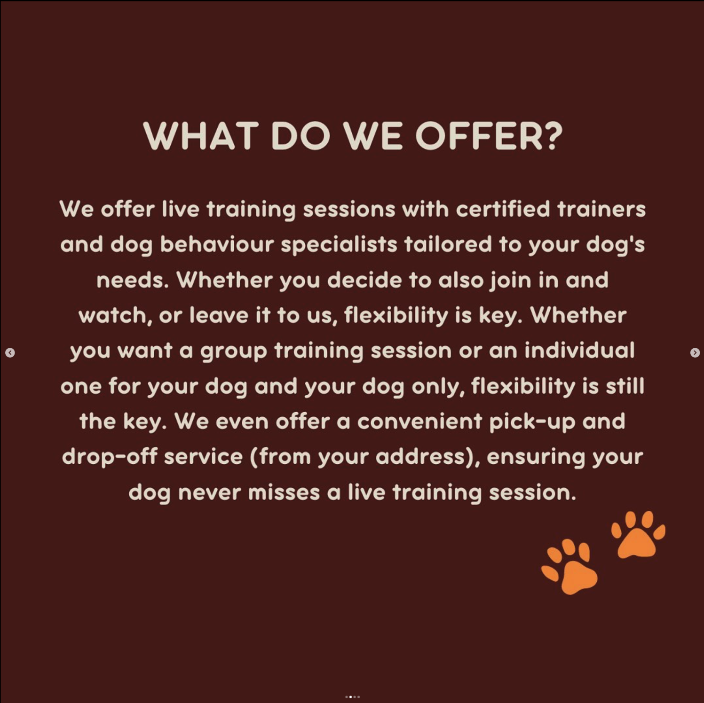
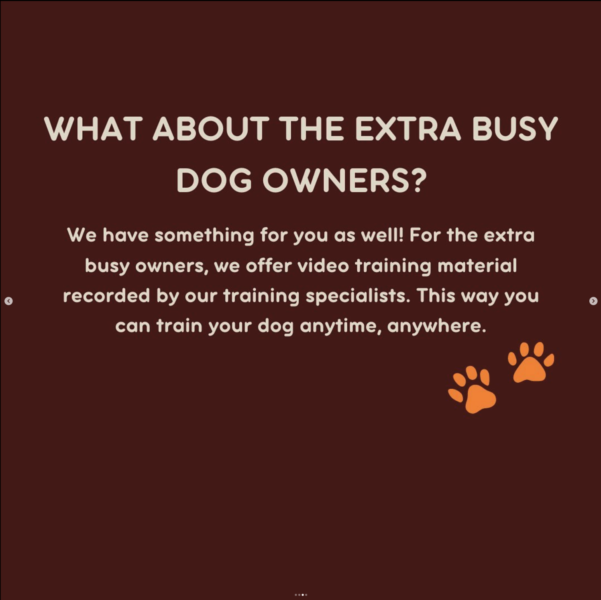
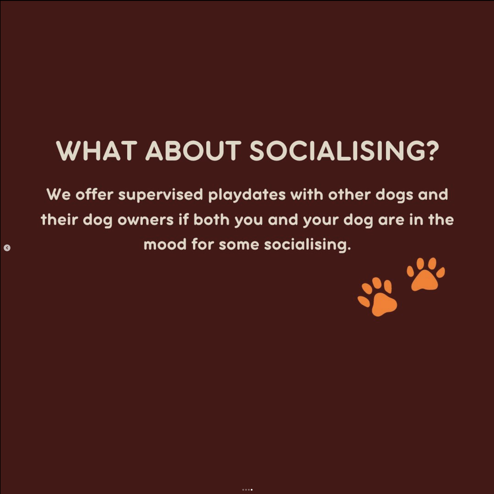

General Information
This branded website is publicly available at PawPal's Club
This website was created by:
- Linda Briede (Student number: 220585 )
- Stilian Lazarov (Student number: 220552)
- Nadezhda Bogoeva (Student number: 220488)
Content
| # | Student ID | Value | Name and link of content |
|---|---|---|---|
| 1. | Linda Briede (220585) | Logo and Values | Main Page |
| 2. | Nadezhda Bogoeva (220488) | Instagram Page and Subscriptions |
Contact Page
Subscriptions |
| 3. | Stilian Lazarov (220552) | Vision and Services |
About and Vision
Services |
Production
Design Elements
Please provide a list of design elements alongside their justifications:
-
A colour scheme:
- #E2DCCD The bone colour was chosen to be plesant for the eye and goes together with the main colour.
- #FF7919 Orange was chosen to be the main pop-up colour that gains attention, as well as, it symbolises energy, creativity, friendliness, and youthfulness, helping to create a vibrant and engaging brand identity.
- #511515 The redish brown colour was chosen to be the muted pop-uo colour as it works well with the bone-coloured background.
- #253928 This dark green colour was chosen to represent nature, stability, trust, and adventure, while also providing visual appeal and contrast.
- #0A0A0A Black was used as an outline colour as well as to have contrast within the colour scheme
- Font choices:
- Source Sans Pro - to achieve a balance of readability, professionalism, versatility, accessibility, and modernity, all of which are crucial factors in creating a strong and impactful brand identity.
- CCDynamicDuoOpen - offers an interesting appearance, modernity, versatility, expressiveness, and readability
- User interface patterns
- Navigation menu - for easy and fast access to different section
- Call to Action - Subscription button were added bellow each subscription column to allow visitors to take action fast and easy
- Hero Section - brand's logo, name and slogan was added to capture the visitor's attention and introduce our brand
- Instagram button - to introduce our socal media to the visitors and establish a lasting relationship by following all the updates on social media
- Scroll-down layout - when the visitor is scrowling down to find a specific information, this layout will let the visitor observe all the other information that comes along and introduces our brand fully
- The structure of the navigation and content: The content was structured to start with introducing our brand's values that will lead the visitor to view the subscription options
- All these elements must be justified by referring to the theory and/or vocabulary of design
- Please relate these elements to other units, for example:
- How does website design fit the values and personality of the brand?
- How does website design fit the marketing and communication strategy?
- How does website design help showcase the unique value proposal of the product?
The website design reflects our brand's values of inclusivity, warmth, and playfulness. Throughout the website, we've incorporated eye-catching images of dogs interacting, friendly language, and vivid colours to further our goal of encouraging a sense of community among dog owners and their furry friends. Furthermore, the simple navigation and user-friendly design reflect our commitment to giving visitors a seamless and joyful experience.
The website design serves as a powerful tool to communicate our brand message and offerings effectively to our target audience. The website promotes interaction and encourages users to learn more about our services by placing call-to-action buttons strategically, providing simple and clear messages, and showcasing content that is visually pleasing. In addition, the incorporation of social media links promotes user engagement.
Credits
Please provide links and/or credits for third-party elements including:
- HTML templates if these are different from this one (buas-media-interactive/prj4-group-template)
- The source code for UX patterns other than the ones provided by the “Bootstrap” library (see getbootstrap.com/docs for a list of such patterns)
- Images that were not produced by students themselves, including when crediting is not mandatory (in other words, we ask you to credit Unsplash images)
Testing Report
Improving Dog Owners' User Experience
We asked participants through our solution interviews to test our website prototype in order to get helpful feedback.We asked six people, all of them are devoted dog owners who understand the difficulty of finding a balance between their time with their animals.
Our goals was - find out if the website is functual and easy to use without any difficulties or confussion for the page visitor.
The instructions were simple. At first we let them interact freely with the website.
Then 3 tasks were given:
- Find the section that explains the brand's vision
- Subscribe to the "Busier Luxe" subscription plan
- Find our Instagram page
- User Experience: Participants complimented the website's flow and user interface, highlighting the information's accessibility and ease of use.
- Design components that Engage: The design components were praised for their friendliness and warmth, which successfully connected with the target demographic.
- There were missing icons for the subscriptions (different icon for each bundle).
Since our feedback it is yet to be decided on how to design the icons for each subscription. Another improvement that has been made is to gather more information in one page, meaning that there aren’t separate pages/hyperlinks for each individual thing. Instead, we included more dropdown menus and rearranged our paragraphs. A ''Meet our Team'' section should be addd to introduce the people that would be taking care of the pet.
Marketing
Context of campaign and promotional activities
About us
PawPals Club is a dog care and dog training service. We dream of a world where every dog receives the attention it deserves, where no dog is bored or crying home alone while waiting for its owner to come from work. We're all about inclusivity and building a community where every pup - young or old, big or small - is welcomed with open arms. Let's create meaningful connections, let us entertain your dog!
Our Target Audience is Dog Owners between 25 and 40 years old, living in the Netherlands – Amsterdam, Rotterdam, Breda, Utrecht, Eindhoven and Den Hague, have full-time jobs, have a family/family orientated, middle to upper class, opened to frequent travels. From the interviews that we did with our target audience we found out the following problems:
- Busy and Guilty Dog Owners: Owners feel guilty due to lack of time to entertain their dogs adequately, leading to feelings of neglect and concern for their pets' well-being.
- Loneliness and Boredom: Dogs experience boredom, sadness, or loneliness due to lack of mental and physical stimulation.
- Lack of Socialization: Dogs miss out on essential socialization opportunities, leading to behavioural issues and anxiety.
In our platform we offer the following services:
- Expert-Led Training Sessions: Conducted by certified trainers and behaviour specialists, taikoed to each dog's needs
- Flexible Training Options: Group or individual sessions, accommodating different preferences
- Convenient Transport Service: Pick-up and drop-off from your doorstep for a hassle-free attendance
- Socialization Events: Opportunities for dogs to interact and owners to connect
- Video Training Material: Accessible resources for training anytime, anywhere
- Quality Merchandise: Curated selection of pet care products for enhanced training and well-being
Persona
*Persona file is also uploaded in Appendix
Social Media Choice
The target audience is busy dog owners between 25 and 40, who use social media to stay updated on events, follow their favorite brands or purely for entertainment after a long workday. Instagram is the platform with the biggest percentage (46%) of users amongst the ages 25 to 44 (Instagram: Distribution of Global Audiences 2024, by Age Group, 2024). From our interviewees all 6 use Instagram, 5 have Facebook but don’t use it and 1 has Snapchat. For this marketing campaign we will focus solely using Instagram, as our interviewee mentioned that they hardly ever open Facebook.
Even though most Instagram users are slightly younger, many people in the 25–40 age range still regularly use the app to share pictures and videos of their pets, especially dogs. They take pleasure in following accounts that post content about dogs, including adorable dog pictures, training advice, and motivational tales. In addition, they might use Instagram to meet other dog lovers and owners who share their interests and to learn about the latest trends in dog grooming, training, and care.
Objectives
- Reach 250 accounts by March 31st, 2024. People already know a brand's visibility, reputation, and message when they come across it for the first time (Edelman, 2023). A reach of 250 people is enough to make a good impression of the brand’s trust and community.
- Affect – Dog owners are interested and want to develop better relationship with their dogs and attend the weekly classes, so that they don’t regret not spending quality time later. We want our audience to rethink their bond with their dogs. With frequent posting and interactive stories, we want to update the followers on important news and have them interact with the brand. We believe that in the timeframe of our campaign we can create a community of responsible dog owners that want to improve the connection with their pet.
- Response
- An average of 300 views on Instagram reels.
- An average of 300 views on Instagram reels.
- An average of 1 comment on each post. Additionally, a study involving 123,410 Instagram profiles reveals that users with up to 1000 followers only receive a maximum of one comment per post each day (Bieldfeldt, 2021).
- An average of 25 to 30 likes per post. In the previously mentioned studies, Bielfeldt (2021) and Erxleben (2021) found that small Instagram accounts with up to 1000 followers receive no more than five likes every day.
- An average of 2 saves per post.
- Campaign
- In a post, we presented our vision, values, and brand. to aid in the accomplishment of our affect goal by inspiring brand excitement and fostering a sense of brand loyalty in our audience. Communicating our values also makes it easier for us to draw in clients who hold similar values.
- Reels: to meet our Reach goals, we exchanged dog-related reels. To encourage audience participation, we also presented our story reels featuring interactive questions. In one reel, we also gave a team introduction.
- Posts that provide details about our website and services. These posts increase excitement and help us establish our brand's credibility. They advertise our service and brand.
- We used longer, more in-depth captions for all posts and reels to help increase viewer attention and engagement. To make all our posts and reels easier to find, we also included hashtags.
Content Calendar

In the beginning we posted 3 times at once to get as much reach as possible. Also, we wanted to have a few posts on display when people open the page and it is not something empty with just one post. We did this for two weeks and afterwards we spread the 3 posts throughout the week to focus not only on gaining new followers, but also retaining the current ones’ interest.
In the first week, on the 8th of April, we posted at noon around 13:00 and in the second week, the 15th of April, we decided to make a change and post at around 18:00-19:00. Afterwards we saw that the reach and engagement on the posts that were shared later was higher, so we continued uploading our content mainly after 17:00-18:00. Additionally, we spaced out the reel postings to guarantee higher interaction. To further advance the branding of our company, we have included additional posts that provide details about our website and app. To encourage greater audience engagement with our brand, we have included more stories that include interactive polls and questions.
Instagram Execution
To keep our posts organized and cohesive we chose to use the following 3 colors – redish/brown, green, and black. Those are also the main colors of our website. The logo is a dog’s paw, and we chose to use it as our profile picture. Most of the posts have small paws as design elements.
We posted 3 instagram reels. The first one was introducing our team as different dog breeds that match our personalities. We made it fun and relateble so that people can comment what breed they think they are. The second reel was made with the intetntion to evoke sympathy in the viewers. We chose a slow piano sound, put text about how no dog should be left alone and later inrtoduced our services and how we can make the dogs’ life more fun. In the description we described in detail our membership plans. The third reel was about interesting facts about dogs. We used stock footage of cute dogs and puppies. This reel had less views but it had better engagment with comments and saves.
First Post

"Prepare for a woof-tastic surprise! 🐾 Lots of love, PawPals’ Team."
Introduction Post
"Welcome to PawPals Club! Where pet lovers unite, tails wag, and friendships bloom! Join our vibrant community today for pawsome adventures, heartwarming stories, and endless fun! 🐶❤️ Lots of love, PawPals’ Team. #dog #doggie #paw #bark #woof"
Introducing Our Services
  
Tips and Tricks
“Training tips and tricks:
1.Start Early: Begin training your dog as soon as you bring them home, regardless of their age. Puppies are like sponges and can learn quickly, but even adult dogs can learn new behaviors with patience.
2.Use Positive Reinforcement: Reward good behavior with treats, praise, toys, or affection. Positive reinforcement encourages your dog to repeat the desired behavior. Avoid punishment-based methods as they can lead to fear and aggression.
3.Be Consistent: Establish consistent rules and expectations for your dog. Use the same commands and gestures each time you train. Consistency helps your dog understand what is expected of them.
4.Keep Training Sessions Short: Dogs have short attention spans, so keep training sessions brief, around 10-15 minutes, several times a day. This helps maintain their focus and prevents them from getting bored or frustrated.
5.Be Patient: Training takes time and patience. Remember that every dog learns at their own pace. Stay calm and avoid becoming frustrated if your dog doesn’t grasp a concept right away.
6.Use High-Value Treats: Use small, tasty treats that your dog loves to reinforce good behavior. Reserve these treats for training sessions to make them more enticing.
PFFFF, IT IS A LOT, RIGHT? SO, LEAVE IT TO US, WE CAN DO IT INSTEAD OF YOU! CHOOSE PAWPALS’’ CLUB AND JOIN OUR LIVE TRAININGS!
Lots of love, PawPals’ team. #dog #training #dogtraining #dogowners “
Learning Points
Reach
Reach 250 accounts by March 31st, 2024. We reached this goal and even almost doubled it. We were expecting to get a slightly bigger reach based on the numbers from our first posts, but we are still satisfied.
Accounts engaged and reached:


Post insights:


Reel insights:


Affect
“We believe that in the timeframe of our campaign we can create a community of responsible dog owners that want to improve the connection with their pet.”- In just four weeks, we think we've established a small but mighty community that supports our brand. Our followers participated actively in the interactive polls we posted on many of the stories we shared, which included questions. We attempted to reply to the few direct messages we also received in less than an hour. We also got compliments on the way our feed looked and how our values were received in those direct messages, which we think indicates that we have gained the respect and loyalty of our followers.
The main takeaway is that many people have made a shift in their behavior with their dogs. People that we had interviewed, and close friends mentioned that once we brought up all those problems, they had acted on them. We even had a direct message from a person that was very interested in our services.
Response
- An average of 300 views on Instagram reels. We surpassed this goal and averaged 440 views on each reel, which for a new account and not posting every single day is a great reach.
- An average of 1 comment on each post. This goal wasn’t that difficult to achieve when we got to post regularly and had a better reach. Although the goal is achieved, we believe that we should have made better call to action in the posts’ captions/descriptions. Also, the content really matters, as some of our latest posts received more comments, because we improved the content.
- An average of 25 to 30 likes per post. Most of our posts got more than 50 likes. We were very surprised with this result, as it means that based on reach, we have around 15% engagement rate and based on followers – about 40%. We are very pleased with the results, and we will continue to post multiple times in the week and at the same time, so that our followers have an idea of when to expect news, posts and information about the brand. One thing that we can make to get better engagement is to post a story a few hours before posting a reel or a post. The story will already create some engagement (which will boost our analytics) and we can also announce the post in the story.
- An average of 2 saves per post. This was easy to achieve as most of our content was targeted to be saved. We made several posts with important information which led to even 4 or 5 saves. If we think of creative ways to give this information we could have had even more saves.
All in all, we discovered that the secret to successful marketing is a carefully created and prepared content calendar. We successfully posted all of the scheduled content on the content calendar, which allows you to see what needs to be done for the upcoming week. We planned what we wanted to communicate through it every weekend. It relieved the pressure of having to create content at the last minute or forgetting to publish. We scheduled our content on Instagram halfway through our campaign, which helped us remember to post by automatically sending us a reminder each time. Posting at precisely 17:30 was especially useful, as after experimenting with different posting times, this is when we got the most engagement. We discovered that to maintain the viewer's interest until the very end, reels need to have powerful hooks and a valuable or surprising element in the midst. We discovered that including a question in the captions of our posts and reels encourages people to start conversations in the comments. Reels generated the most interaction with our profile, so we discovered that we should concentrate on them. Additionally, we discovered that interactive stories are a great way to engage with our audience and foster loyalty and trust. And it also makes the user experience better.
Future Planning
In order to have clear goals and ensure that the content we create aims to achieve them, if we decide to continue the campaign in the future, we will first set new objectives. Additionally, since the content calendar was very helpful to us during those four weeks, we will create a new one. We were able to reduce the stress of forgetting what and when to post by organising our thoughts and content ahead of time. This allowed us to spend more time engaging with our audience and telling more engaging stories. Reels will be our focus going forward since they attracted the most visitors to our page; however, we'll use more popular Instagram sounds to increase their reach. Because our best-performing reel had both of those, we will also make reels with strong hooks and more information in the caption and video. To encourage participation and spark conversations, we will include questions in our posts that readers can respond to in the comments section. We plan to share more stories featuring polls and interactive questions. To foster loyalty and trust among our audience, we wish to engage with them more. In the future, we would also like to collaborate with influencers to create posts or reels for upcoming events or giveaways. To increase audience anticipation and engagement, we will let the audience know when there are updates to our website or app or when new announcements (like giveaways) will be made. Finally, we will make Instagram Live Q&A in order to interact with our followers. We will do these 2 to 3 times a month.
Here are some of our objectives for the future:
- Reach
- Reach 2500 accounts by May 1st, 2024.
- Have engagement of 500 accounts by May 1st, 2024.
- An average of 1000 views on each reel by May 1st, 2024.
- Affect
- Response
- An average of 100 likes on each post by May 1st, 2024.
- Get no less than 5 comments per post by May 1st, 2024.
- Have at least 5 saves on each post by May 1st, 2024.
- Have at lest 7 shares on every post by May 1st, 2024.
- Content Calendar, April 2024
By May 1st,2024, we want our audience to be anticipating and involved in our posts by turning on countdown reminders and notifications and participating in polls, quizzes, questions, and direct messages. We want to see our community grow and get more people to join classes and sign-up to our platform.
Content description and planning is created every Sunday for the upcoming week.

Professionalism
Our Instagram Reels:
Management
Lean Canvas
Problem
- Busy and Guilty Dog Owners: Owners who don't have enough time to provide their dogs with some type of stimulation feel guilty, which fosters feelings of neglect and concern for the well-being of their dogs.
- Loneliness and Boredom:Dogs feel bored, sad or lonely due to lack of mental and physical stimulation in their daily routine.
- Lack of Socialisation: When dogs don't get enough opportunities for socialisation, it can cause anxiety and behavioural problems.
- Lack of Consistent Training: Limited time or a lack of experience often make it difficult for dog owners to keep up a regular training schedule for their pets. Both the dog and the owner may become frustrated as a result of this inconsistency.
Existing Alternitives
- Owners can hire dog walkers or pet sitters
- Owners might rely on toys to keep their dogs entertained
- Others may enroll their dogs in traditional doggy daycare facilities
- Or enroll their dogs in traditional group training classes
Solution
- Guilty-Free Live Training Sessions:
- Tailored sessions with certified trainers and behavior specialists.
- Flexible scheduling options to accommodate busy owners.
- Owners can join training sessions when they find spare time, enhancing their bond with their dogs.
- Individual or group training sessions based on owners' preferences.
- Convenient pick-up and drop-off service provided for extra busy owners who are unable to bring their dogs to the facility.
- On-Demand Video Training Library:
- Comprehensive library of training videos led by certified trainers, covering a range of behaviour topics and training tips.
- Accessible online, allowing owners to engage with their dogs at their convenience, reducing feelings of guilt and providing a sense of control over their pets' development.
- Community Socialization Events:
- Regularly scheduled socialization events, providing opportunities for dogs to make other dog friends.
- Socialization events also for owners to connect and bond with other like-minded dog owners, fostering a sense of community and support.
Customer segments
- Busy Dog Owners trying to find an Alternative:
- Individuals with limited time due to work or other commitments, seeking guidance and support regarding their dogs training, behaviour and health.
- Owners with Lonely or Bored Dogs:
- Those who recognize their dogs' need for stimulation but struggle to provide it.
- Persona:
- Name: Amara
- Age: 25-40
- Occupation: Full-time Marketing Director at Scotch and Soda
- Lifestyle: Searching for the balance between having a demanding career and being a single mom of an 18 years old son.
- Dog: Luna, a 3-year-old Golden Retriever.
- Characteristics: Often feels overwhelmed balancing her career and personal life. Recognizes the importance of ensuring Luna's well-being and happiness but struggles to find time for training and socialization due to her busy schedule. Seeks convenient and effective solutions to provide Luna with the attention and stimulation she needs.
Unique value proposition
- "PawPals' Club: Where Every Dog Finds Joy, Every Owner Finds Ease!”
- Our dedication to making pet care easier for busy owners is what makes us unique. We make it possible for you to incorporate dog training into your schedule by providing morning and evening classes with flexible scheduling. Also, you won't need to worry about transportation thanks to our pick-up and drop-off service. You can rely on us to put your dog's pleasure and your own peace of mind first. Come PawPals' Club with us to see the difference for yourself.
Unfair advantage
- Exclusive Partnerships and Resources:
- PawPals' Club has formed partnerships with top experts, institutions, and suppliers in the pet care sector. These unique partnerships give us access to cutting-edge training methods, specialised resources, and high-end goods that are difficult for rivals to imitate.
- Four Tailored Subscription Plans:
- PawPals' Club provides a variety of subscription options. We provide alternatives to fit every budget and lifestyle, whether you're searching for a basic package with the needed training sessions or a premium plan with extra bonuses and services. Different from competitors who adopt a one-size-fits-all strategy, our flexible subscription model allows consumers to customise their experience to meet their unique needs
- Simplified Pet Care For The Busy Owners:
- Our top priority is making our clients' life easier, which is why we offer easy pick-up and drop-off services as well as flexible scheduling options. We stand out from the competition through our dedication to convenience, allowing owners to put their dog's health first without adding stress to their already busy schedules.
Channels
- Instagram:
- Word-of-mouth marketing:
- Local Veterinarian Clinics:
- Utilising Instagram for community development, interaction, and promotion. Because it is the quickest way to reach new audiences and because our target audience (those in the 25–40 age range) uses it the most (according to credible statistics), this is our most significant and most relied-upon channel.
- Encouraging happy clients to tell others about PawPals' Club.
- Forming alliances with veterinarian practices in nearby areas in order to get in touch with pet owners directly.
Key metrics
- Customer Satisfaction: Feedback and reviews
- Average Customer Satisfaction Rating: 4.5 out of 5
- Percentage of Positive Reviews: 80%
- Percentage of customers renewing their subscriptions:
- Monthly Renewal Rate: 75%
- Social Media Engagement: Likes, shares, and comments on posts indicating brand engagement
- Average Likes per Post: 300
- Average Shares per Post: 30
- Average Comments per Post: 30
Revenue streams
- Membership Subscriptions:
- Online Luxe: €15/month
- Access to video library only, with one included group live training session per month
- Busy Luxe: €60/month
- Includes access to video library, eight group live training sessions per month, unlimited socialisation events.
- Busier Luxe: €80/month
- Includes access to video library, twelve group live training sessions per month, unlimited socialization events, priority booking, and 15% discount on additional services.
- Busiest Luxe: €120/month
- Includes access to video library, sixteen group live training sessions per month, unlimited socialization events, priority booking, and 20% discount on additional services. Includes round-trip pick-up and drop-off service for each session.
- Additional Services:
- Individual Training Sessions:
- €20 per hour-long session with a certified trainer.
- Pick-up and Drop-off Service:
- €10 for both ways way within a 20-mile radius.
- Additional €5 for every extra 5 miles beyond the initial 20-mile radius.
- Merchandise and Product Sales:
- Branded Leash: €19
- Collar with PawPals' Club Logo: €19
- Interactive Toy: €12
- Training Treats (Pack of 80): €10
- PawPals' Club T-Shirt: €27
- Water Bottle with Logo: €15
- Chew Toy: €9
- Training Whistle: €8
- Online Luxe: €15/month * 500 subscribers = €7500
- Busy Luxe: €60/month * 250 subscribers = €15000
- Busier Luxe: €80/month * 200 subscribers = €16000
- Busiest Luxe: €120/month * 150 subscribers = €18000
- Individual Training Sessions: €20 per session * 100 sessions booked = €2000
- Pick-up and Drop-off Service: €10 per session * 200 sessions booked = €2000
Subscription Revenues:
Total Subscription Revenue = €7500 + €15000 + €16000 + €18000 = €56500
Additional Services Revenues:
Total Additional Services Revenue = €2000 + €2000 = €4000
Merchandise Revenue: €500
Total Revenue = Total Subscription Revenue + Total Additional Services Revenue + Merchandise Revenue = €56500 + €4000 + €500 = €61000
Cost structure
-
Fixed Costs:
- Rent: €5000 per month
- Equipment Costs: €1000 per month
- Wages: €40,000 per month
- Insurance: €1500 per month
- Cost of Goods Sold (COGS): 20% of merchandise revenue (€800)
- Session Costs: €5 per training session
- Transportation Costs: €3 per pick-up and drop-off service session
- Marketing Expenses:€500 per month for marketing
- Utilities: €1000 per month
Variable Costs:
CALCULATIONS
Total Fixed Costs = Rent + Equipment + Wages + Insurance = €5000 + €1000 + €40,000 + €1500 = €47,500 per month
- Cost of Goods Sold (COGS) = 20% of €800 = €160
- Session Costs = €5 * 100 (training sessions) = €500
- Transportation Costs = €3 * 200 (pick-up and drop-off service sessions) = €600
- Marketing Expenses = €500
- Utilities = €1000
Total Variable Costs:
Total Variable Costs = €160 + €500 + €600 + €500 + €1000 = €2760
Total Costs = Total Fixed Costs + Total Variable Costs = €47,500 + €2760 = €50,260
Total units = 100 (training sessions) + 200 (pick-up and drop-off service sessions) = 300
Cost per unit = Total Costs / Total units = €50,260 / 300 ≈ €167.53
Services/products
- Expert-Led Training Sessions: Conducted by certified trainers and behavior specialists, tailored to each dog's needs.
- Flexible Training Options: Group or individual sessions, based on your preference.
- Convenient Transport Service: For hassle-free attendance, we pick up your dog and bring it home for you when you don't have the time to.
- Socialization Events: Opportunities for dogs to interact and owners to connect.
- Video Training Materials: Easily accessible materials for instruction at any time or location.
- High-quality merchandise: Selected pet care items for better training and overall health.
Validation of Assumptions
Assumptions:
- The target group is dog owners who are actively seeking solutions for dog care, training, and playtime.
- The problem they face is the lack of convenient and comprehensive resources for dog care, training, and playtime activities.
- The solution being offered is a subscription-based website that provides access to expert advice, training resources, and interactive playtime ideas for dogs.
- The demo showcases the key features and functionalities of the website, including access to articles, videos, training guides, and interactive playtime activities.
Contribution to Unique Value preposition:
Our service/product adds to our unique offer by putting the happiness and health of dogs and their owners first. We are aware of the difficulties experienced by busy pet owners, and we want to soothe their worries by providing practical, reliable, and flexible alternatives.Fit with Brand Identity/Brand Image
Warmth, diversity, and pet care knowledge are all reflected in the PawPals' Club brand concept. We maintain our brand's reputation as a reliable companion in the pet ownership process with our customised solutions and one-of-a-kind approach to socialisation and training. Furthermore, our commitment to providing convenient services like pick-up and drop-off to owners in order to make pet care easier, further strengthens our reputation as a trustworthy pet service. In the end, what we have to offer is the very best of PawPals' Club—a kind, informed community that cares about the welfare of both pets and their owners.Conclusions, adjustments, and improvements made to the Lean Canvas based on the two rounds of interviews
Conclusions from Problem Interviews:
During problem interviews, we engaged with potential customers to identify the challenges they face regarding their dog's care and training. Through these interviews, we discovered three primary problems:- Busy and Guilty Dog Owners: Owners feel guilty due to lack of time to entertain their dogs adequately, leading to feelings of neglect and concern for their pets' well-being.
- Loneliness and Boredom: Dogs experience boredom, sadness, or loneliness due to lack of stimulation and interaction.
- Lack of Socialization: Dogs miss out on essential socialization opportunities, leading to behavioral issues and anxiety.
Conclusions from Solution Interviews:
- Restricted Flexibility: Those who found it difficult to schedule training sessions and other services, wanted options that were more adaptable to their hectic schedules.
- More Customisation: A lot of people expressed a need for additional options when it came to training courses and subscription plans. They believed that in order to better serve their unique wants and preferences, the services have to be more customised.
- Need for Guarantee: Before committing, people expressed they they want to feel certain and confident in the service. They asked for a free trial option, so that before they subscribe officially, they could try the service and make sure it meets their expectations.
The changes made after receiving the feedback:
- Adding extra features like flexible scheduling options, handy pick-up and drop-off services, and supervised socialisation events for both dogs and owners.
- Improving the training programmes to provide more individualised and customised choices, such as adding both group and individual sessions, to suit busy dog owners' various schedules and tastes.
- Additional Subscription Plan: In order to give customers even more options for customisation and flexibility while still meeting their individual needs and budgets, a new subscription plan was introduced.
- Merchandise Options: To reduce reliance on a single source of income and increase revenue streams, merchandise options were added.e. Channel Expansion: We expanded our channels to include veterinary clinics as a strategic partner for spreading information about our services.
- Channel Expansion: We extended our channels to include veterinary clinics in order to spread information about our services.
- Value Proposition Rewritten: We tried better highlighting the unique characteristics and benefits of our offerings, like flexibility, convenience, and all-inclusive solutions for busy dog owners, in our revised value proposition.
- Business Plan Modifications: To better meet the needs and preferences of our target market, we adapted our business plan to include the extra features and services discovered during the interviews as well as lean canvas modifications.
- One Session Free Trial and One week of access to our Online Video Training Library: We added a free first training session. Also, for those interested in the online video library, they will receive access to the first 3 basic training tutorials for free. This way the pet owners can try the service and see for themselves if it is something they want to invest in long-term.
Appendix
- First draft of Lean Canvas
- Management File
- Prototype of the Website Used for Solution Interviews
- Interview Audio Recording
- Marketing File with References
- Prototype of the website used for solution interviews
- Prototype of the website used for solution interviews
- Prototype of the website used for solution interviews
- Prototype of the website used for solution interviews
- Prototype of the website used for solution interviews
- Prototype of the website used for solution interviews
- Prototype of the website used for solution interviews